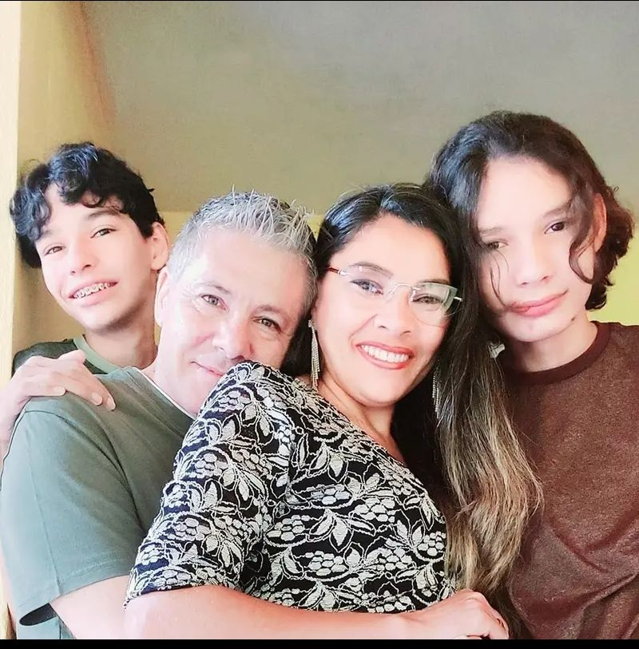

Era uma vez duas crianças gêmeas, porém, cada uma com suas características. Certo dia, seus pais se divorciaram. As crianças ficaram em guarda compartilhada, fins de semana com o pai, e de segunda a sexta com a mãe.
Mas, o pai das crianças começou a conhecer outra mulher, simpática, com carisma. Com o tempo, a mulher começou a mudar, manipulando-o para não dar atenção aos seus próprios filhos.
A mãe, já com muitos problemas de saúde, lutou para conseguir o direito de seus filhos, mas pouca coisa foi resolvida. O pai os enganava, voltava a cumprir a guarda no fim de semana, mas depois de algum tempo parava, afirmando: "eu dou mais de 800 reais de pensão, já faço mais que minha obrigação".
O tempo passou... As duas crianças já eram adolescentes, e a família continuava na mesma situação. Até que certo dia, a mãe conheceu um homem que iria ajudar muito essa família, não apenas financeiramente, mas principalmente dando amor, carinho e atenção, tanto à mãe quanto aos dois rapazes que nem eram do seu sangue.
O nome desse homem era Bernardo Jorge Coelho. Bernardo se casou com a mãe dos dois jovens. O pai terminou seu relacionamento com a mulher e começou a tentar mudar.
Atualmente, Bernardo tem uma família que o ama. Os jovens, mesmo sabendo que não têm parentesco algum com aquele homem, o consideram como um segundo pai.
